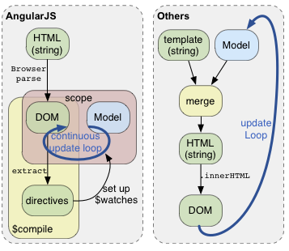

Superheroic JavaScript MVW Framework
Slides and demo by Ståle Pettersen / @kozmic
TL;DR
- Developed by Google
- MVW
- Extend HTML with your own components
- Two way data-binding
- Dependency injection / Testable
- Routing and deep linking
- Validation
- Security mechanisms
- Supported by all browsers (and IE7)
- XHR with exception handling, promises and interceptors
TL;DR TL;DR
AngularJS is a HTML compiler running in the browser
MVVM-ish
| Model: | Plain Javascript |
| ViewModel: | $scope object with tiny API which is dirty checked |
| Controller: | Set initial state of $scope and defines behavior when $scope change |
| View: | Resulting HTML rendered markup (including directives) with bindings |
Simple AngularJS app
<html ng-app>
<head>
<script type="text/javascript" src="lib/angular/angular.js"></script>
</head>
<body>
<input type="text" ng-model="name">
<h3>Hello {{name}}!</h3>
</body>
</html>
Controller
- Populates $scope through service or factory
- Provides $scope to view
Controller
var SimpleCtrl = function ($scope) {
$scope.title = "SimpleCtrl fantastic title";
$scope.footer = "My Footer ";
$scope.people = [
{name: 'Jøran Lillesand', age: 28, tronder: true},
{name: 'Ståle Pettersen', age: 20, tronder: false},
{name: 'Ola Nordmann', age: 50, tronder: false }
];
$scope.addPerson = function() {
$scope.people.push({name: $scope.name, age: $scope.age});
$scope.name = "";
$scope.age = "";
};
$scope.deletePerson = function (person) {
$scope.people.splice($scope.people.indexOf(person), 1);
};
}
Data-binding
- Uses dirty checking instead of change listeners
- ($apply ->) $digest -> $watch
-
To trigger changes in AngularJS from outside AngularJS:
$scope.$apply(SCOPE-CHANGING-CODE-HERE)
Templates
- Inline / URL / script-type
- Parsed by browser and resulting DOM is cached in $templateCache
<h2>{{ heading }}</h2>
<h2 ng-model="heading"></h2>
<h2 ng-bind="heading"></h2>
Template lifecycle
Dependency injection
Magic DI
var FancyCtrl = function($scope, $location, FancyService) {
// Your batshit fancy code here
}
Minifiable
FancyCtrl.$inject = ['$scope', '$location', 'FancyService'];
Dependency injection
angualar.module('myModule', []).
config(function(depService){
...
}).
factory('serviceId', function(depService) {
...
}).
directive('directiveName', function(depService) {
...
}).
filter('filterName', function(depService) {
...
}).
run(function(depService) {
...
});
Dependency injection IRL example
var RealLifeApp = angular.module('RealLifeApp', [
'ngSanitize',
'routes',
'services',
'jobs',
'loader',
'filters',
'ajaxErrorHandler',
'ajaxHeaderSetup',
'timeoutInterceptor',
'specialDirectives',
'cmsTextDirectives'
]);
REST
-
Buildt in service $resource:
$resource(url[, paramDefaults][, actions]); - Default returns: query, save, remove
- Buildt on top of $http (ajax, promise, interceptors, exception handling, >)]}',, X-XSRF-TOKEN header)
var CreditCard = $resource('/user/:userId/card/:cardId',
{userId:123, cardId:'@id'}, {
charge: {method:'POST', params:{charge:true}}
});
var newCard = new CreditCard({number:'0123'});
newCard.name = "Mike Smith";
newCard.$save();
REST mocking
// Mocking XHR in dev-mode
var MyAppDev = angular.module('MyAppDev', ['MyApp', 'ngMockE2E']);
MyAppDev.run(function($httpBackend) {
$httpBackend.whenGET('/simple/ping').respond('pong');
$httpBackend.whenGET('/simple/cards/').respond(window.data.cards);
}
<html ng-app="MyAppDev">
Directives
- At the core of AngularJS
- We've already seen some of the built in directives
- Can be really simple or complex, and crazy powerful
<html ng-app>
<button ng-click="save()"></button>
<question type="radio" title="Felling good?" alts="{ 'yes':1, 'no':0 }" />
<markdown>
## Crazy stuff
* Should give AngularJS a spin
* 4 realz!
</markdown>
Directive - API
myApp.directive('directiveName', function() {
return {
priority: 0,
scope: { localName:'@myAttr' },
template: '<div></div>',
templateUrl: 'directive.html',
replace: true,
restrict: 'EACM',
controller: function
compile: function compile(tElement, tAttrs, transclude) {
return {
pre: function preLink(scope, iElement, iAttrs, controller) {..},
post: function postLink(scope, iElement, iAttrs, controller) {..}
}
},
link: function postLink(scope, iElement, iAttrs) {..}
}
});
Usage:
<directive-name/> <div class="directive-name"/>
<div directive-name/><!-- directive: directive-name -->
Directives
Usually small and easy to understand
- link
- replace and templateUrl
Directives - Simple
myApp.directive('picture', function () {
return {
restrict: 'E',
replace: false,
link: function (scope, element, attrs) {
if (scope.$root.isOldIE) {
scope.imageSrc = "img/" + scope.image.src;
} else {
scope.imageSrc = "data:" + scope.image.mimeType + ";base64," + scope.image.data;
}
},
template: '<img src="{{imageSrc}}"/>',
replace: true
}
})
Directives - Advanced
Routes
angular.module('myRoutes', [], function($routeProvider, $locationProvider) {
$routeProvider
.when('/user/:userId', {
templateUrl: 'user.html',
controller: UserCtrl
})
.when('/user/:userId/card/:cardId', {
templateUrl: 'card.html',
controller: CardCtrl,
resolve: {
delay: function($q, $timeout) {
var delay = $q.defer();
$timeout(delay.resolve, 200);
return delay.promise;
}
}
})
.when('/404', { templateUrl: '404.html' });
.otherwise( { redirectTo: '/404' });
$locationProvider.html5Mode(true);
});
Validation
Built-in
- HTML5 Input types: text, number, url, email, radio, checkbox
- Directives: required, pattern, minlength, maxlength, min, max
- Build your own validation directives
- novalidate to disable browser performing validation
Validation - Example
<form name="form" class="css-form" novalidate>
Name:
<input type="text" ng-model="user.name" name="uName" required />
E-mail:
<input type="email" ng-model="user.email" name="uEmail" required/>
<div ng-show="form.uEmail.$dirty && form.uEmail.$invalid">
Invalid:
<span ng-show="form.uEmail.$error.required">Email required</span>
<span ng-show="form.uEmail.$error.email">Invalid email</span>
</div>
Gender:
<input type="radio" ng-model="user.gender" value="male" />male
<input type="radio" ng-model="user.gender" value="female" />female
<button ng-click="update(user)"
ng-disabled="form.$invalid || isUnchanged(user)">SAVE</button>
</form>
Testing
angular.module('myApplicationModule', [])
.value('mode', 'app')
.value('version', 'v1.0.1');
describe('MyApp', function() {
// You need to load modules that you want to test,
// it loads only the "ng" module by default.
beforeEach(module('myApplicationModule'));
// inject() is used to inject arguments of all given functions
it('should provide a version', inject(function(mode, version) {
expect(version).toEqual('v1.0.1');
expect(mode).toEqual('app');
}));
angular.mock.inject with jasmine
Tools
- Chrome Extension: AngularJS Batarang
- angular.mock.debug
Good resources
THE END
BY Ståle Pettersen / @kozmic
Demo app: http://kozmic.github.com/angular-demo/